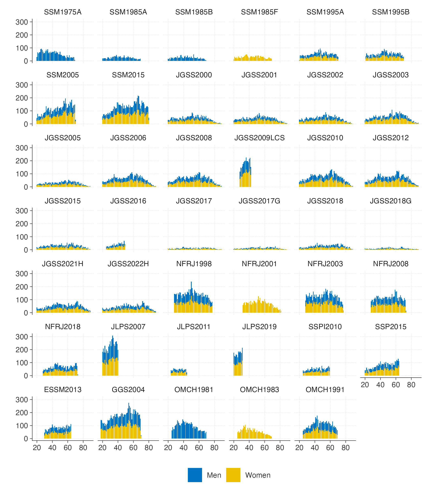

Harmonization
2023年度から進めている社会調査データの統合プロジェクトに関連する成果等をまとめています。
問題意識
以下は麦山ほか（2025: 1–2）からの引用です。
東京大学社会科学研究所附属社会調査・データアーカイブ研究センターと大阪商業大学JGSS研究センターによって国内の社会調査データの共有・公開がなされるようになってから20年余，日本の大規模社会調査データの利用をめぐる環境は飛躍的に改善した．1990年代末より相次いで全国を対象とした無作為抽出の社会調査が実施され，それらの研究成果が公刊されるだけではなく，アーカイブへの寄託・公開を通じて様々な研究者等に利用され二次分析による研究成果の産出につながっている．今や実証研究において既存の大規模社会調査データの二次分析は標準的な方法である．
こうしたなかで求められるのは，既存のデータをより有効に活用することである．なかでも既存社会調査データを統合した分析は，サンプルサイズを増やすとともに複数時点の比較分析を可能とし，より正確により大きな問いに答えるうえで重要である．国内外でこうした実証研究例は枚挙に暇がない．たとえば社会階層研究におけるCitation classicとなっている研究として，F. Torcheによる大卒層において出身階層と到達階層の関連が小さいことを示した研究（Torche 2011），R. Breenらによるヨーロッパにおいて教育機会の不平等が縮小傾向にあることを示した研究（Breen et al. 2009）が挙げられる．これらは複数の社会調査を統合したデータを利用することによってこれまで十分に明らかになっていなかった現象を明らかにした研究である．日本においても複数種類・複数時点の社会調査を合併し，変数を統合させて分析を行った事例は少なくない（Fujihara and Ishida 2016; 平尾・太郎丸 2011; Mugiyama and Toyonaga 2022; 打越 2016）．数十年におよぶ不平等の趨勢，少数集団の詳細な特徴などに関わる問いは，単一時点・一回限りの社会調査データで明らかにすることは難しく，複数の社会調査データを組み合わせることによってはじめて明らかにすることができる．
しかしながら，これまで日本における既存社会調査データを統合した分析は，各研究者が個別に行うにとどまっている．この状況は以下の3点で望ましくない．第1に，通常研究者が社会調査データの分析で用いる変数には，たとえば性別，年齢，職業，学歴，婚姻状態，所得等，共通のものが多いにもかかわらず，各研究者が個別に統合データを作成する場合，本来必要でない多くの労力を割く必要がある．第2に，複数の調査データの統合は変数の作成に際して通常の分析以上に労働集約的であり，個別の研究者が行う場合，誤りが生じる可能性は無視できず，かつ結果の再現性も損なわれる．どのように変数を作成するべきかについてはしばしば単一の答えがない場合もあるが，データ構築に用いるコードを利用者間で共有し，複数の目を通すことによって，少なくとも明らかな誤りについてはそのリスクを減らすべきである．第3に，上記の作業の負担から既存社会調査データの統合には及び腰になりやすく，その結果，データさえあれば答えられるはずの多くの重要な研究課題が未解決のまま残されている．
上記の問題意識のもとで立ち上げられたのが「社会調査データの合併による二次分析研究の刷新」プロジェクトである．本プロジェクトの目的は2点ある．第1に，社会学者が中心となって実施してきた大規模社会調査データを統合（ハーモナイゼーション harmonization）するコードを作成することである．なお本稿では，各調査で聴取された回答に対して事後的に定義を揃え比較可能とする作業のことを指してデータ統合ないしハーモナイゼーションと呼び，互換的に用いる ．第2に，構築されたデータを活用して，日本社会における不平等の趨勢と実態に関わる様々な記述的問いに答えることである．
現況
約20名のメンバーの協力を得ながら、以下の社会調査データを統合したデータの構築と整備、多方面から分析を進めています。
社会階層と社会移動調査（SSM）：1975, 1985ABF, 1995AB, 2005, 2015
日本版総合的社会調査（JGSS）：2000, 2001, 2002, 2003, 2005, 2006, 2008, 2009LCS, 2010, 2012, 2015, 2016, 2017, 2018, 2017G, 2018G, 2021H, 2022H
東大社研・若年壮年パネル調査（JLPS）：2007, 2011, 2019
全国家族調査（NFRJ）：1998, 2001, 2003, 2008, 2018
社会階層と社会意識調査（SSP）：2010-I、2015
教育・社会階層・社会移動全国調査（ESSM）：2013
職業移動と経歴調査（OMCH）：1981, 1983, 1991
世代とジェンダー調査（GSS）：2004

文献
麦山亮太・平松誠・コンアラン・那須蘭太郎・吉田航，2025，「社会調査データの統合による二次分析研究の刷新：作業手順と今後の調査実施に向けた示唆」SSJ Data Archive Research Paper Series. 96. 東京大学社会科学研究所附属社会調査・データアーカイブ研究センター．